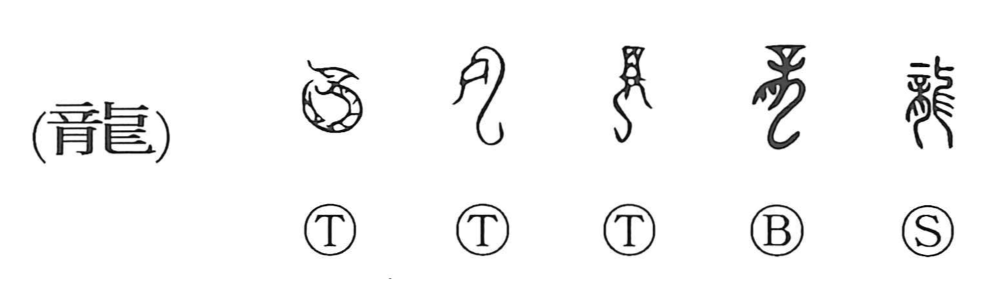

Explanation
A pictograph of a sinuous, snake-bodied creature crowned with a headpiece shaped like the character 辛—a mark of a sacred beast—竜 evokes the awe and numinous power of the dragon. In oracle-bone and bronze texts, 龔 shows a dragon (竜) being held up with both hands (廾) in offering, a graph that stands as the prototype of 恭 “to be reverent, discreet.” Dragons were associated with shamans and with rites of cursing, revered as deities of floods and appearing in old myths as gods in dragon form. Ancient graphs also preserve the dragon’s presence in nature: 云, the ancestor of 雲 “cloud,” depicts a dragon’s coiled tail glimpsed beneath streaming clouds; 旬 shows a dragon with its tail curled; and 虹 “rainbow” pictures a creature in the shape of a dragon arcing the sky. The prevailing on-yomi is ryu (also ryo), and the character appears in expressions such as 竜頭蛇尾, “a bright beginning that dwindles at the end.”